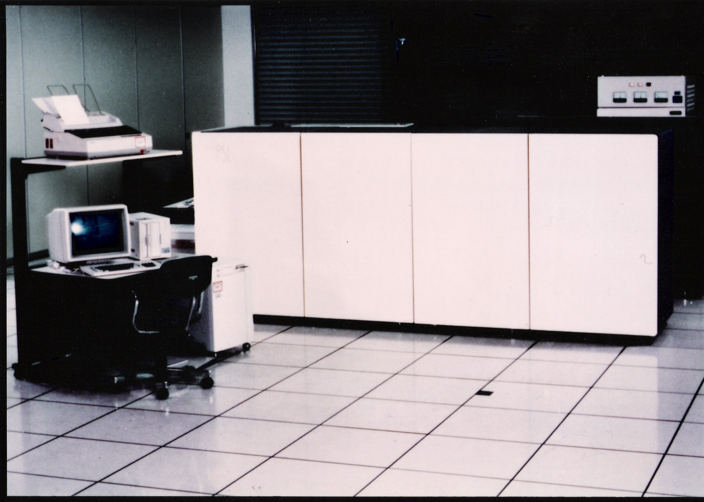
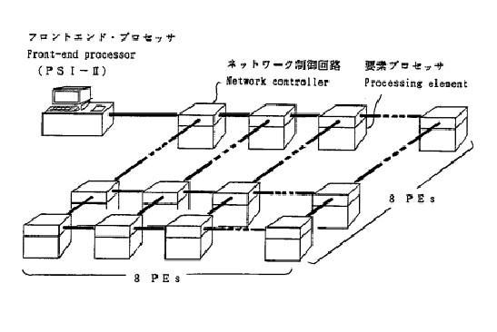
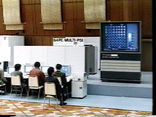
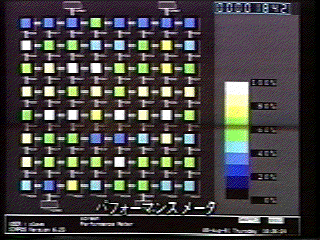

Multi-PSI
並列推論マシン実験機
Multi-PSIの目的は、実際の並列マシンの実機のうえで、KL1の処理系（ファームウェア）、並列OSを作ってみることでした。そのためには、ハードウェアは安定に動作することを第一とし、PSI-IIのCPUを要素プロセッサとし、これを下記のように６４台接続しました。並列論理型言語KL1処理系、並列OS,PIMOSができあがった後は、いろいろな応用ソフトウェアの並列版がこの上で試作され、研究されました。
逐次型としてこれまで作られてきたソフトウェアを並列化してもおいそれとは早くならず、多くの例では、並列化したら1台で実行するより遅なり、机上の並列化と実際の相違を学ぶ最初の実験台となりました。
|
|
|

１筐体に４台が格納。
|

Multi-PSIの構成
|

FGCS '88国際会議の会場に展示されデモプログラムを実行するMulti-PSI |

64台のプロセッサの稼動状態を示すパーフォマンスメーター |